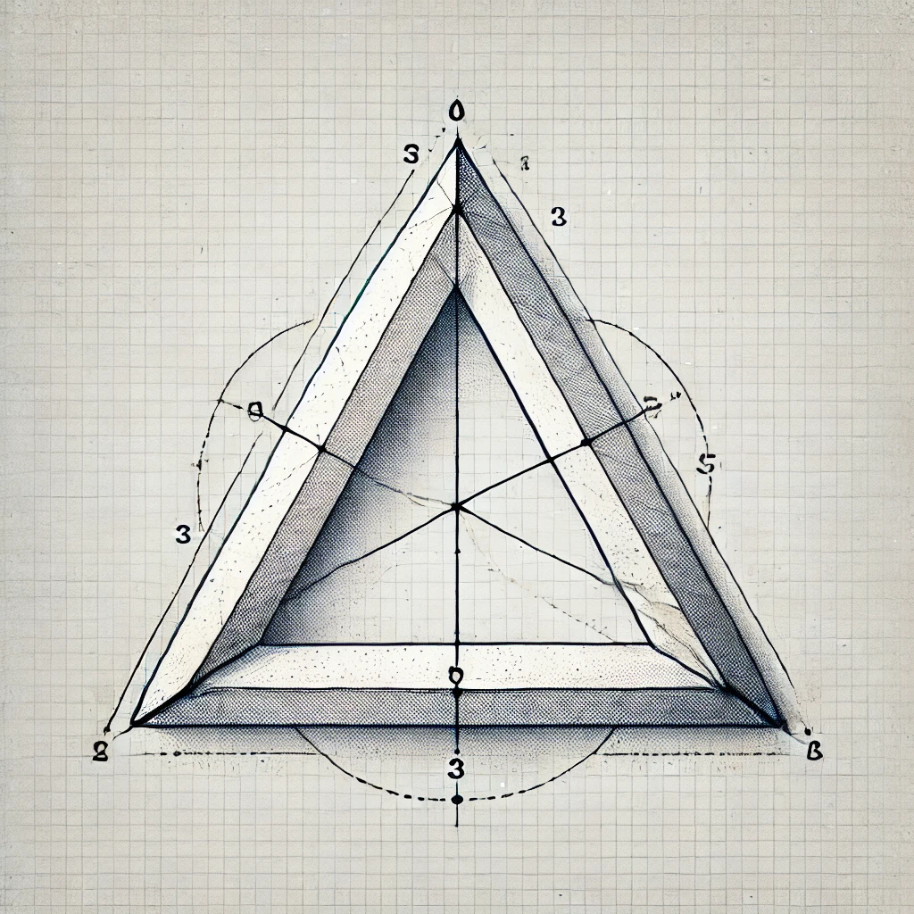

Uchburchak Nima?
Uchburchak uchta tomon va uchta burchakka ega bo'lgan eng oddiy geometrik shakllardan biridir. U planimetriya va trigonometriyada asosiy element sifatida qaraladi.
Uchburchak Turlari
- To'g'ri burchakli uchburchak: Bitta burchagi 90 darajaga teng.
- O'tkir burchakli uchburchak: Uchta burchagi ham 90 darajadan kichik.
- O'tkir burchakli uchburchak: Bitta burchagi 90 darajadan katta.
- Teng yonli uchburchak: Ikki tomoni teng.
- Teng tomonli uchburchak: Uchta tomoni ham teng.

Uchburchak Formulalari
Perimetri: Uchburchak tomonlarining yig'indisi.
Maydon: To'g'ri burchakli uchburchak uchun:
Maydon = (asos * balandlik) / 2
Qiziqarli Faktlar
Uchburchaklarning asosiy qoidalaridan biri: istalgan ikkita tomon yig'indisi uchinchi tomondan katta bo'lishi kerak. Bu qoidani buzgan har qanday shakl uchburchak bo'la olmaydi.